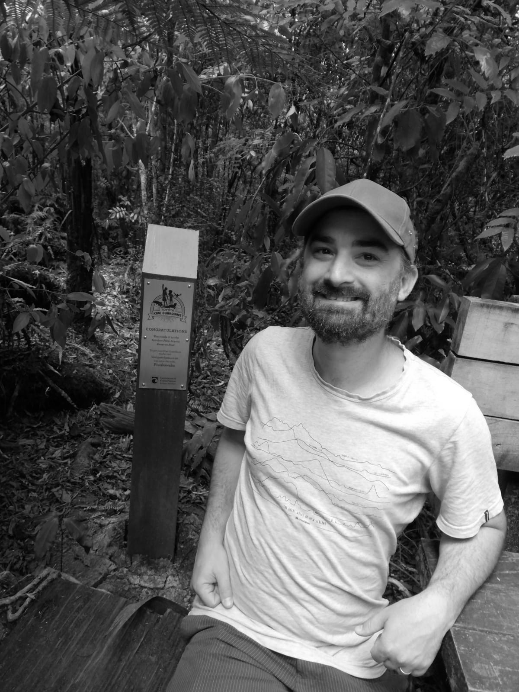

HELLO
I am a skilled cartographer, senior GIS analyst, experienced spatial developer and a QGIS superuser, with a passion for open source and open data. I am driven by the challenge of clearly communicating spatial data, a love of learning, problem solving, innovation and fairness. Currently, I work at the Toitū Te Whenua Land Information New Zealand.
CONNECT